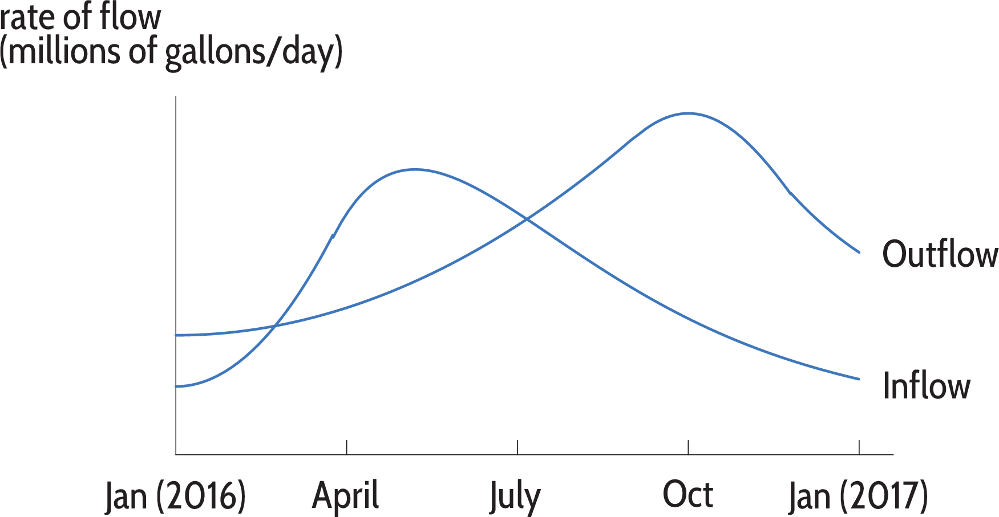

Section 3 Part 3
Note: There may be several questions after the figure. Make sure you scroll down.

Move on to the next part (see the menu).
Note: There may be several questions after the figure. Make sure you scroll down.
Move on to the next part (see the menu).